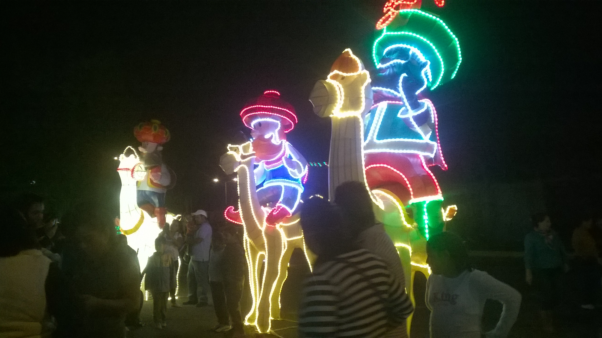
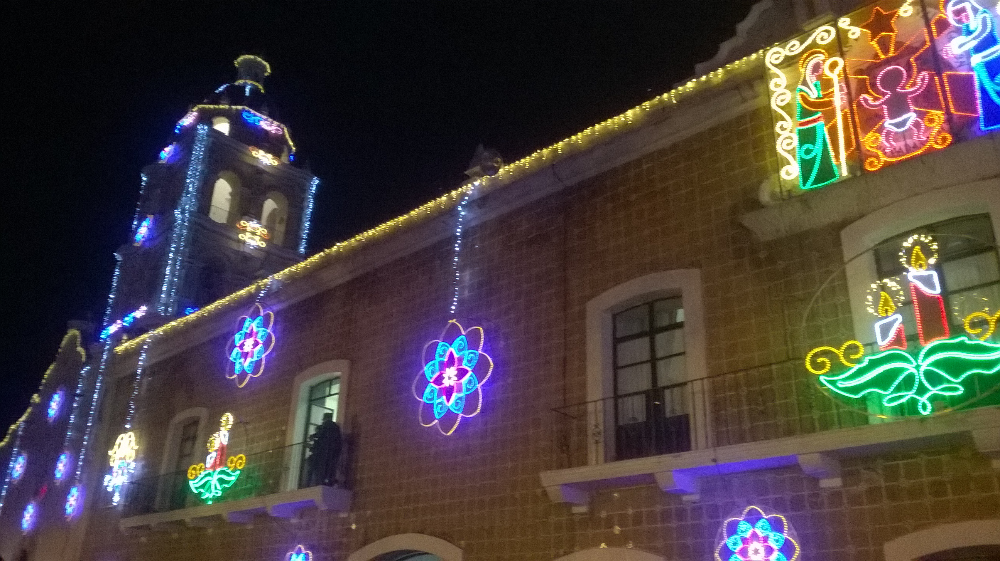
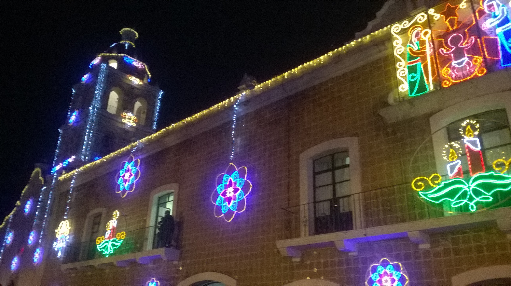

La forma de las luces obedece a 4 temas principales; el primero es el de la primavera, donde hay flores, ardillas, aves entre otras; la segunda, ubicada en la calle Nicolás Bravo, es del amor, en donde los fines de semana un grupo de voluntarios regala rosas a las parejas e invitan a que el novio recite algunos poemas a su pareja, el tercero es la zona del ferrocarril, donde el tema son los trenes, y finalmente en el Parque de la Revolución se encuentra el cuarto dedicado a los niños.
De acuerdo con el funcionario, trajeron “este proyecto con la intención de generar derrama económica a través de los visitantes, que nos llegan de diferentes partes de la república y de la propia gente de Atlixco”.
Dedicado a la agricultura en su ciudad natal, impuso nuevos sistemas de cultivo. Contrajo matrimonio con Sara Pérez en 1903. Fundó la Escuela Comercial de San Pedro y en 1904 empieza su carrera política, fue nombrado presidente del Club Democrático en Coahuila, y escribió en el periódico El Demócrata artículos políticos.
Dentro del marco de la villa, se desprenden varios eventos como son la Feria de la Nochebuena, del 28 de noviembre al 2 de diciembre, donde se calcula una venta de “millón y medio, millón 700 mil plantas de nochebuena directamente del productor hacia el comprador”. El segundo evento es la Fiesta de la Ilusión, en donde “una famosa cervecería trae a diversos artistas de muy buen nivel a un costo accesible para la población”, Este evento inició el 13 de diciembre y terminara el 26 del mismo mes.
El tercer evento es el Festival Internacional Villa Iluminada, nombrado así por el gobierno del estado en colaboración con el Consejo Estatal Para la Cultura y las Artes, que inició el 7 de diciembre y concluyó el pasado 16 del mismo mes.
Se concluirá con el evento de Fiesta de Reyes , en donde son 3 kilómetros de contingente incluyendo carros alegóricos, donde hay 3 festividades. El 4 de enero se llama el Festival de la Ilusión, en donde se regalan más de 5 mil globos a los niños y se lanzan desde el cerro de San Miguel previo a una obra de teatro; el día 5 es el magno desfile y el día 6 es el Festival de Reyes en el Recinto Ferial, en donde se entregan más de 5 mil juguetes a niños de bajos recursos, además de disfrutar de juego mecánicos, dulces y rosca.

 
